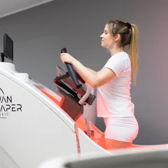
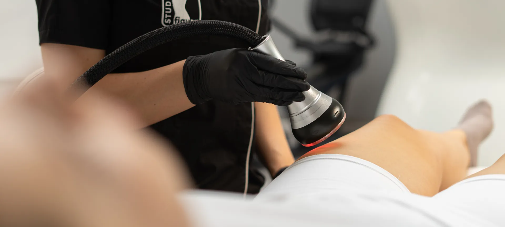
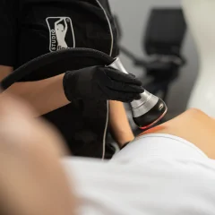
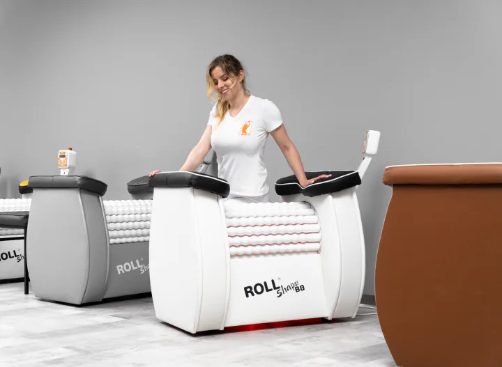
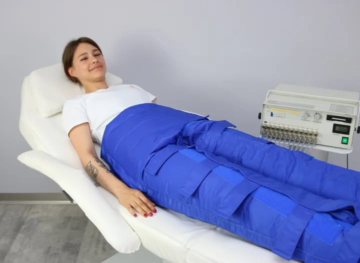
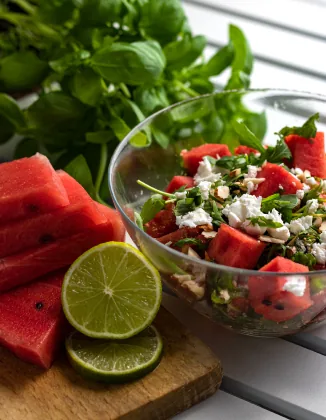
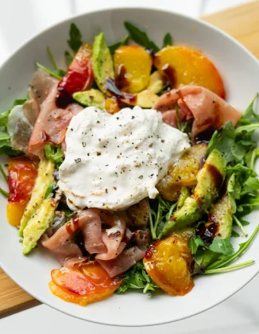
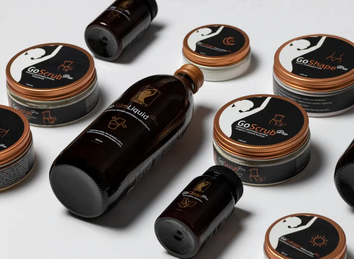
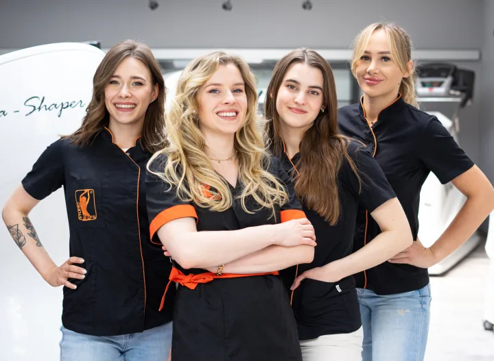

01
Strefa Fitness
Nowoczesny sprzęt do ćwiczeń, który pomaga szybciej tracić kilogramy i poprawia kondycję. Wychodzisz ze smuklejszą sylwetką i dużą dawką energii.

Treningi, zabiegi, dieta i wsparcie ekspertek w jednym, kobiecym studiu. Zamieniamy wymówki w efekty, a plany w rzeczywistość.
pn-pt 8:00-21:00sob 9:00-14:00
Do odchudzania i modelowania sylwetki podchodzimy kompleksowo: łączymy ruch, zabiegi i pielęgnację, a plan układamy pod Ciebie.

01
Nowoczesny sprzęt do ćwiczeń, który pomaga szybciej tracić kilogramy i poprawia kondycję. Wychodzisz ze smuklejszą sylwetką i dużą dawką energii.
02
Odchudzanie nie musi być trudne. Tu gubisz centymetry, leżąc wygodnie na fotelu, a zabiegi wspierają utratę masy ciała i relaksują ciało i głowę.

03
Nieinwazyjne zabiegi na ciało i twarz: wiotka skóra, uporczywa tkanka tłuszczowa, cellulit i inne niedoskonałości. Bez skalpela.

Rollmasażer z drewnianymi wałkami, które lekkim uciskiem masują całe ciało. Udrażnia przepływ krwi i limfy, wspiera detoksykację, ujędrnia skórę, wygładza cellulit i wysmukla sylwetkę.

Mechaniczny masaż na opuchnięte i ciężkie nogi. Wspiera redukcję tkanki tłuszczowej, poprawia kondycję skóry, zmniejsza skórkę pomarańczową i przy okazji świetnie odpręża.
Pierwsza wizyta to konsultacja. Poznajemy Twoje cele i na tej podstawie układamy plan, który obejmuje wszystko, czego potrzebujesz do wymarzonej sylwetki.
Mierzymy ciało, pytamy o styl życia, preferencje i ewentualne choroby.
Dobieramy treningi, zabiegi, dietę i kosmetyki do Twoich potrzeb i zdrowia.
Ćwiczysz i korzystasz z zabiegów, a nasze ekspertki doradzają i motywują.
Sprawdzamy postępy i wspólnie świętujemy każdy z nich.
Nasz dietetyk układa plan żywienia dopasowany do Twoich potrzeb i smaku. Efekty zobaczysz w coraz luźniejszych ubraniach i lepszym samopoczuciu.
Zapytaj o dietę

Przesuń, żeby zobaczyć więcej

Autorska linia naturalnych kosmetyków i suplementów diety dla kobiet, które dbają o zgrabną sylwetkę. Działają od środka i od zewnątrz, wspierając efekty treningów i zabiegów.
Zapytaj w studiu, co najlepiej sprawdzi się przy Twoim planie.

„Nie potrafię”, „nie dam rady”, „to się nie uda”? W Studio Figura udowodnimy Ci, że wszystko jest możliwe. Z naszą wiedzą i wsparciem osiągniesz efekty, które kiedyś wydawały się poza zasięgiem.
Nie znalazłaś odpowiedzi? Zadzwoń: 518 158 328.
To indywidualny i kompleksowy plan: dopasowane treningi, które spalają kalorie i poprawiają kondycję, zdrowa dieta, zabiegi odchudzające, które przyspieszają efekty, oraz kosmetyki i suplementy. Nasze ekspertki doradzają, motywują i świętują z Tobą każdy postęp.
Pierwsza wizyta to konsultacja. Poznajemy Twoje cele, wykonujemy pomiary ciała i pytamy o styl życia oraz ewentualne choroby. Na tej podstawie przygotowujemy plan działania.
Tak. Studio Figura powstało z myślą o kobietach, ich potrzebach i komforcie. W życzliwej atmosferze, bez krępujących spojrzeń, możesz zadbać o sylwetkę i zdrowie.
Stawiamy na zdrowe i zrównoważone metody: zbilansowaną dietę i regularny ruch. Zabiegi wykonujemy na sprawdzonym, nowoczesnym sprzęcie, a przed każdym upewniamy się, że nie ma przeciwwskazań.
Pomagamy w utracie masy ciała i zmniejszaniu obwodów, a także w walce z cellulitem, wiotką skórą, zmarszczkami czy utratą owalu twarzy. Do tego lepsza kondycja i samopoczucie.
Zadzwoń albo zostaw numer, oddzwonimy i ustalimy termin pierwszej wizyty.